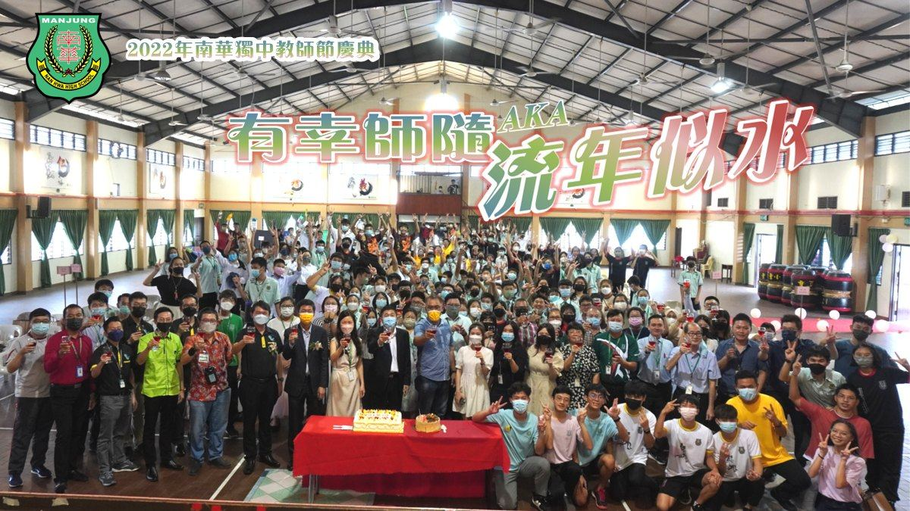
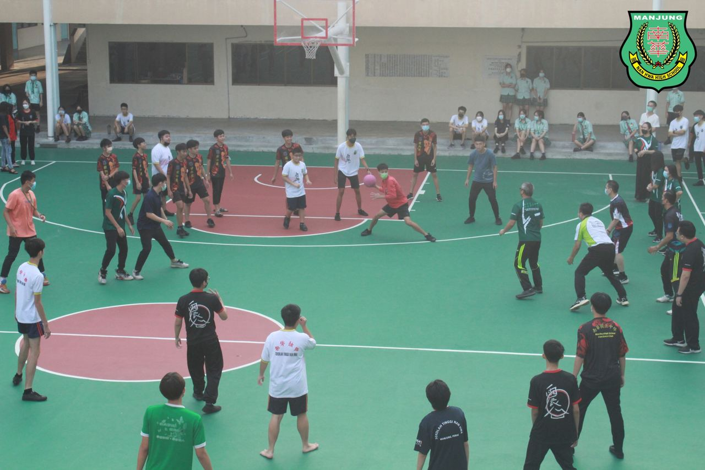
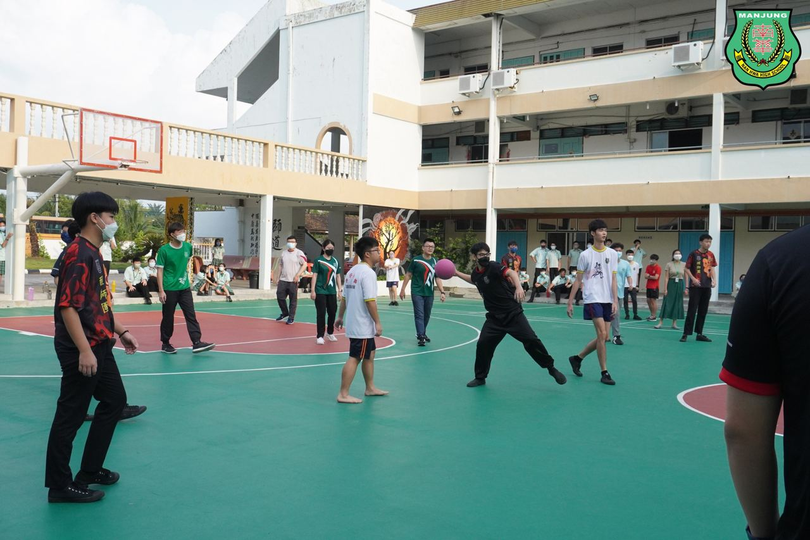
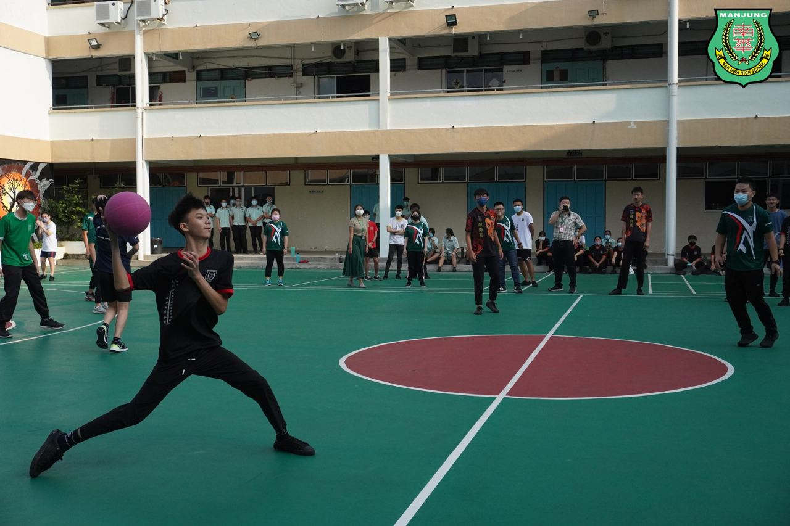
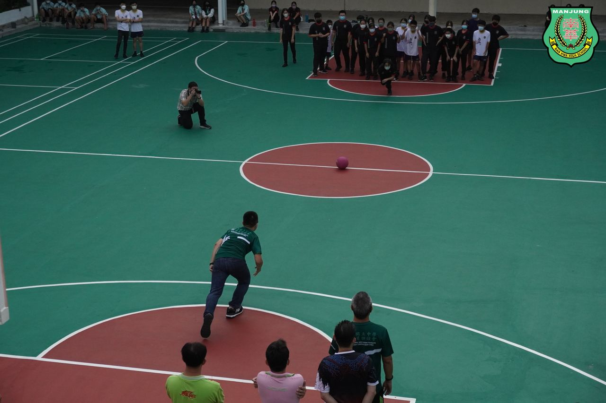
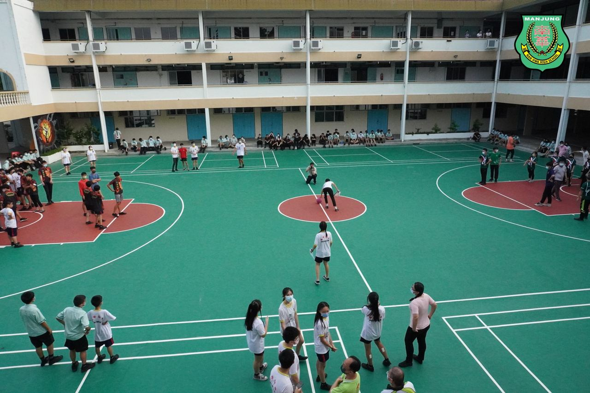
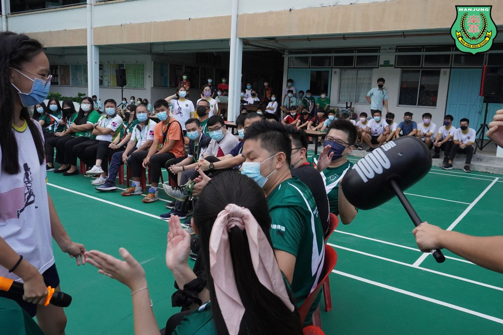
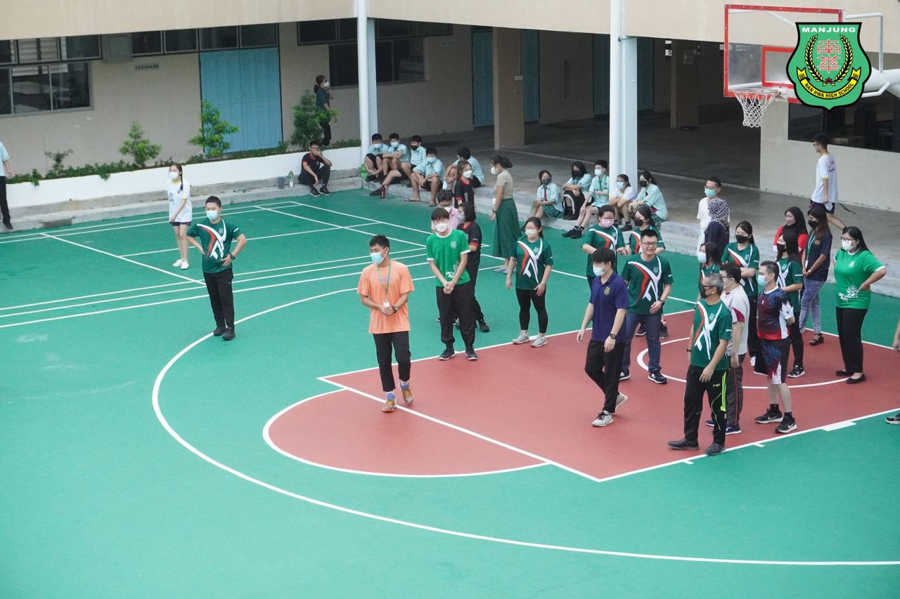

🧑🏫2022年教师节庆典】👩🏫
🧑🏫2022年教师节庆典】👩🏫
由班导师所带领的高三筹委会主办
“有幸师随 AKA 流年似水”于7月23日终于圆满落幕。
疫情下停课不停学；疫情后复课即复办教师节庆典。
高三生有幸的是，能以实体的方式，号召与聚集全校董家教员生，以隆重的庆典向劳苦功高的师长们表达恩情。
【师】 情重教兴风尚，
【恩】 德培才出壮苗。
【南】 育桃李满天下，
【华】 治人才育新苗。
在教育的路上，始终是以学生为本；
在学习的路上，老师皆是学生榜样。
南华独中亦借此机会，祝愿天下老师，教师节快乐。
#教师节庆典 #有幸师随 #流年似水
#教师节快乐 #南华独中 #曼绒 #实兆远







